Dein Ziel
Am Ende dieses Kurses kannst du:
- mit dem Metronom einen gleichmäßigen Puls halten,
- einen 4/4-Takt zählen,
- ganze, halbe und Viertelnoten sowie die zugehörigen Pausen lesen, schreiben, nach Gehör erkennen und klatschen, während dein Fuß den gleichmäßigen Puls hält.
Lektion 01 / Musik als Geschichte
Musik als Geschichte

Die menschliche Existenz dreht sich um Geschichten:
Wir erzählen, was geschehen ist, um zu verstehen, wer wir sind.
Betrachte dieses Bild und erzähle daraus eine Geschichte.
Hast du dir eine ausgedacht?
Glückwunsch: Du hast gerade begonnen, Musik zu machen.
Unsere Natur führt dazu, dass Ereignisse in Worten, zeitlich geordnet werden.
Dann lass dir Zeit und schließe die Augen.
Glückwunsch! Du hast aus einem Bild eine Geschichte entwickelt.
Lektion 02 / Zeit & Puls
Musik findet in der Zeit statt
Musik: sequenziellEreignisse entfalten sich nacheinander in der Zeit.
Bild: simultanDie visuellen Elemente sind gleichzeitig vorhanden und können grundsätzlich auf einmal erfasst werden.
Anders als in einem Bild, in welchem alle Ereignisse sofort sichtbar sind, entfalten sich Ereignisse in der Musik nacheinander. Klänge beginnen, dauern eine bestimmte Zeit und enden.
Rhythmus gestaltet Zeit
Für Rhythmus interessiert uns zunächst nicht, wie hoch ein Ton ist, sondern wann etwas passiert und wie lange es dauert.
Der Puls
Ein gleichmäßiger Puls, also gleichmäßige Abstände, erlauben uns einen zeitlichen Bezugspunkt zu wahren, welcher als Zentrum für weitere Ereignisse funktioniert. Um dieses Zentrum herum können sich weitere Ereignisse entfalten.
Schaffst du es, genau dann zu klatschen, wenn die nächste Zahl auftaucht?
Die Geschwindigkeit (Tempo, BPM)
Eine Geschichte muss sich an der Wahrnehmung des Menschen orientieren, um Aufmerksamkeit zu binden und verstanden zu werden. Aus dem selben Grund muss die Geschwindigkeit einer musikalischen Geschichte an den Menschen angepasst sein.
Ist sie zu langsam, kann der Mensch denken, dass sich nichts verändert.
Ist sie zu schnell, kann er die Ereignisse nicht mehr auseinanderhalten.
Ist sie zu unregelmäßig, kann der Mensch, abgesehen von der Zufälligkeit, kein Muster erkennen.
Inneres Zeitgefühl
Das Metronom gibt einen gleichmäßigen Puls vor.
Wir üben, diesen Puls bewusst wahrzunehmen.
Wir verbinden den musikalischen Puls mit einer Körperbewegung.
Es ist üblich, dafür einen Fuß zu nutzen, doch jedes Körperteil und auch mehrere gleichzeitig können den Puls markieren.
Wir machen den musikalischen Puls körperlich spürbar.
Glückwunsch! Du kannst den musikalischen Puls erkennen und mit einer Bewegung markieren.
03 / Notation & Takt
Rhythmische Notation
Schläge werden zu Takten gruppiert
Damit wir nicht endlos weiterzählen, fassen wir eine bestimmte Anzahl von Schlägen zu wiederkehrenden Gruppen zusammen. Eine solche Gruppe heißt Takt.

Der 4/4-Takt
Die häufigste Gruppierung besteht aus vier Schlägen:
- 4
- Wie viele Schläge gehören zu einem Takt? Vier Schläge.
- /4
- Welcher Notenwert dient als Zählzeit? Die Viertelnote.

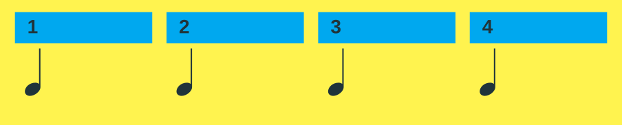
Glückwunsch! Du kannst einen 4/4-Takt erkennen und zählen.
04 / Die Notenwerte
Wenn es Viertel gibt...
muss es Halbe...
und Ganze geben.
In der westlichen Musiknotation verwenden wir verschiedene Notenwerte, um die Dauer eines Tons darzustellen.
Im 4/4-Takt lernen wir zunächst Viertel-, Halb- und Ganznoten kennen.
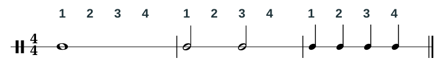
Die Viertelnote
Die Viertelnote dauert 1 Schlag, also füllt sie in einem 4/4-Takt ein Viertel des Taktes. Man braucht also vier davon, um einen 4/4-Takt zu füllen.
Die halbe Note
Die halbe Note dauert 2 Schläge, also füllt sie in einem 4/4-Takt den halben Takt. Man braucht also zwei halbe Noten, um einen Takt zu füllen.
Die ganze Note
Die ganze Note dauert 4 Schläge. Man braucht also nur eine einzige ganze Note, um einen 4/4-Takt zu füllen.
Glückwunsch! Du kennst die Viertel-, Halb- und Ganznote und weißt, wie lange sie dauern.
05 / Die Pausenzeichen
Für Stille brauchen wir Pausenzeichen
Auch Stille nimmt Zeit ein. Sie kann Spannung aufbauen und dir Zeit geben, das Gehörte zu verarbeiten. Deshalb gibt es zu jedem Notenwert eine entsprechende Pause.
Viertelnote & Viertelpause 1 Schlag
Halbe Note & halbe Pause 2 Schläge
Ganze Note & ganze Pause 4 Schläge
Glückwunsch! Du kannst die drei Pausenzeichen unterscheiden und ihre Dauer bestimmen.
Du hast Puls, Takt, Notenwerte und Pausenzeichen kennengelernt. Kehre zu einem Abschnitt zurück, wenn du etwas noch einmal nachlesen möchtest.
Rhythmus Kurs 1 / Kapitel 02
Die Notenwerte.
Dein Fuß hält den Puls. Jetzt kommen die Hände dazu: Lies, klatsche, höre und schreibe ganze, halbe und Viertelnoten.
Zum Einstieg
Der Puls bleibt. Die Notenwerte wechseln.
Nachdem du im ersten Kapitel gelernt hast, einen gleichmäßigen Puls zu halten, fügen wir nun unterschiedliche Notenwerte hinzu.
Wenn wir klatschen, können wir Notenlängen nicht genau darstellen, da wir nur ein kurzes Geräusch machen. Daher halten wir unsere Hände für die Dauer der Note zusammen. Jede Note beschreibt, wie lange ein Ton dauert.
Der Puls deines Fußes bleibt dabei immer gleich.
Der Fuß trägt weiterhin die Zeit.
Deine Hände klatschen die Notenwerte und machen ihre Dauer spürbar.
Lernziele
Nach diesem Kapitel kannst du:
- Ganze, halbe und Viertelnoten erkennen.
- Die Dauer jeder Note erklären.
- Notenwerte im 4/4-Takt lesen.
- Notenwerte mit Fuß, Stimme und Klatschen korrekt ausführen.
- Einfache Rhythmen ohne Pausen vom Blatt lesen.
- Vollständige 4/4-Takte mit Notenwerten schreiben.
Aufbau der Lektionen
Jede Lektion folgt dem gleichen Ablauf:
- Erklärung
- Körperübung
- Mitspielübung
- Leseübung
- Höraufgabe
Lektion 01 / Ganze Note
Vier Schläge. Eine Note.
1. Erklärung
Eine ganze Note dauert vier Schläge.
2. Körperübung
Tritt mit dem Fuß auf jeden Schlag und klatsche die Note. Zähle laut:
3. Mitspielübung
Stampfe 1 2 3 4
Zähle 1 2 3 4
Klatsche 1
Halte 2 3 4
4. Leseübung
Lies die Takte. Stampfe den Puls. Zähle laut. Klatsche den Rhythmus.

Glückwunsch! Du kannst jetzt eine Ganznote klatschen, während dein Fuß den Puls markiert.
Lektion 02 / Halbe Note
Zwei Schläge pro Note.
1. Erklärung
Eine halbe Note dauert zwei Schläge. Im 4/4-Takt passen zwei halbe Noten in einen Takt.
2. Körperübung
Dein Fuß markiert 1, 2, 3, 4. Klatsche auf 1 und 3.
3. Mitspielübung
Stampfe 1 2 3 4
Zähle 1 2 3 4
Klatsche 1 und 3
Halte 2 und 4
4. Leseübung
THE RHYTHMINATOR
Noch keine Takte übertragen. Erstelle in Aufgabe 4 eine Zwei-Takt-Gruppe und werte sie als richtig aus.
5. Höraufgaben 1–5
- 1 Takt Einzähler
- 4 Takte Noten
- Stampfe die Zählzeiten 1234
- Notiere die Länge der gespielten Noten
- Vergleiche mit der Lösung
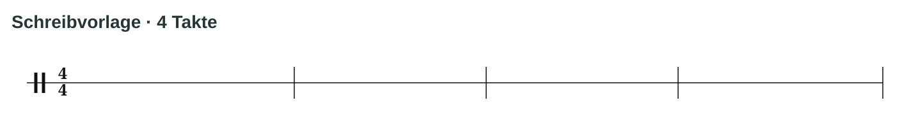
Höraufgabe 1
Lösung 1 anzeigen
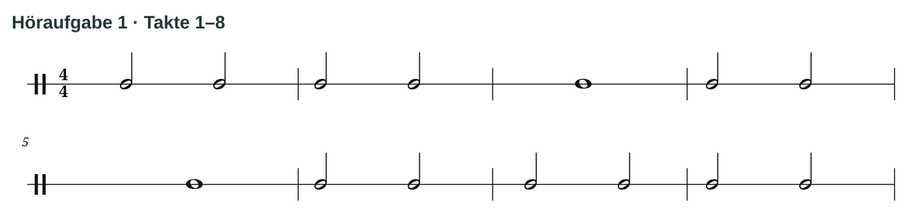
Höraufgabe 2
Lösung 2 anzeigen

Höraufgabe 3
Lösung 3 anzeigen
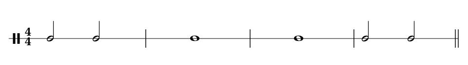
Höraufgabe 4
Lösung 4 anzeigen
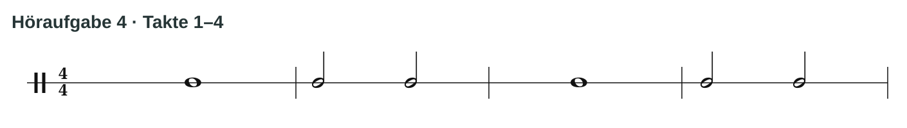
Höraufgabe 5
Lösung 5 anzeigen
Glückwunsch! Du kannst jetzt halbe Noten klatschen, während dein Fuß den Puls markiert.
Lektion 03 / Viertelnote
Ein Schlag pro Note.
1. Erklärung
Eine Viertelnote dauert einen Schlag.
2. Körperübung
Stampfe und klatsche auf 1, 2, 3 und 4.
3. Mitspielübung
Klatsche auf allen vier Schlägen. Zähle laut und stampfe auf jedem Schlag.
4. Leseübung
Öffne die Übung „Rhythmus Kurs 1 Kapitel 2 Lektion 3 Leseübung“ und mache dich mit den Takten vertraut.
Spiele dann wie zuvor schon die Takte, indem du mit dem Fuß stampfst und dabei klatschst.
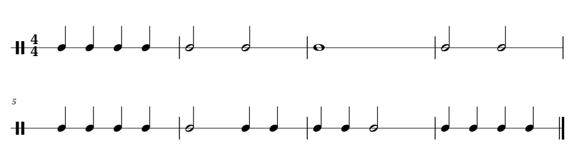
5. Höraufgaben 1–3
Für diese Lektion gibt es drei Höraufgaben. Es kommen ganze, halbe und Viertelnoten vor.
Höre die drei Aufgaben nacheinander im Rhythm Radio an. Notiere die Takte auf Papier und vergleiche deine Lösung mit dem Lösungsblatt, das das Radio ausgibt.
Tipp: Es ist besser, nur eine Aufgabe oder sogar nur einen Takt mit höchster Hingabe und Konzentration zu bearbeiten, als alle Aufgaben auf einmal zu machen und nicht bei der Sache zu sein.
Höraufgabe 1
Lösung 1 anzeigen
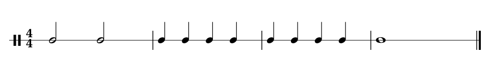
Höraufgabe 2
Lösung 2 anzeigen

Höraufgabe 3
Lösung 3 anzeigen
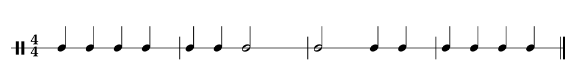
Glückwunsch! Du kannst jetzt Viertelnoten klatschen, während dein Fuß den Puls markiert.
Lektion 04
Gemischte Notenwerte
1. Erklärung
Ganze, halbe und Viertelnoten können sich abwechseln. In einem Takt können auch verschiedene Notenwerte vorkommen. Zähle immer bis vier und klatsche nur beim Beginn einer Note. Halte den Puls mit dem Fuß.
Im Beispiel dauert die halbe Note die Schläge 1 und 2. Auf 3 und 4 folgt jeweils eine Viertelnote.
2. Körperübung
Stampfe auf jedem Schlag. Klatsche auf 1, 3 und 4 und halte die Hände auf 2 zusammen.
3. Mitspielübung
Klatsche die Notenanfänge der vier Takte. Zähle laut und stampfe auf jedem Schlag.
4. Leseübung · Vier Takte klatschen
Zähle gleichmäßig „1, 2, 3, 4“ und klatsche die Notenanfänge. Prüfe deinen Rhythmus mit dem Rhythminator.
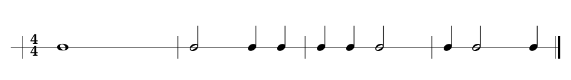
Takte vervollständigen
Ergänze die Lücken mit Noten. Jeder Takt muss auf vier Schläge kommen. Für manche Lücken gibt es mehrere Lösungen.
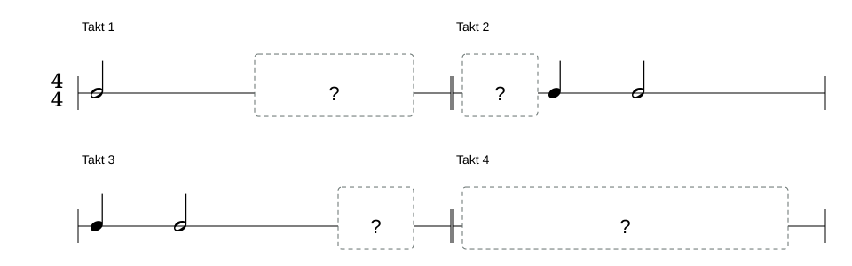
Finde den Fehler im Takt
Vergleiche die Vorlage mit dem, was du im Rhythm Radio hörst. Schreibe den gehörten Takt auf und prüfe ihn mit der Lösung.
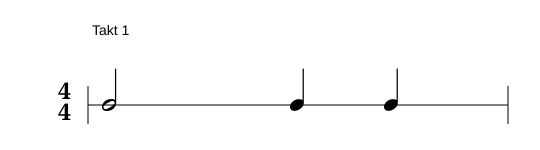
Hörvergleich
Lösung anzeigen
Du hörst zwei Viertelnoten auf 1 und 2 und eine halbe Note ab 3. In der Vorlage steht die halbe Note am Anfang.
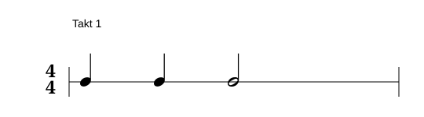
Eigene Takte schreiben und spielen
Setze im Editor eine ganze Note in den ersten Takt. Kombiniere im zweiten Takt halbe und Viertelnoten. Spiele deine Takte ab, klatsche sie zum Puls und spiele sie auf deinem Instrument. Schreibe danach zwei weitere Takte auf Papier.

Glückwunsch! Du kannst ganze, halbe und Viertelnoten in einem Rhythmus klatschen und dabei den Puls halten.
Zum Abschluss
Reflexion
Das nehme ich mit:
Hake ab
Glückwunsch!
Du hast Kapitel 2 abgeschlossen. Du kannst ganze, halbe und Viertelnoten lesen und spielen.
Rhythmus Kurs 1 / Kapitel 03
Raum für Pausen.
Auch Stille gehört zum Rhythmus. Dein Fuß trägt den Puls weiter – du lernst, Pausen zu lesen, zu spüren und genau einzuhalten.
Zum Einstieg
Die zweite Seite des Rhythmus
Im letzten Kapitel hast du gelernt, dass Noten unterschiedlich lange dauern können. Jetzt lernst du die zweite Hälfte des Rhythmus: Pausen.
Eine Pause bedeutet nicht, dass der Puls stoppt. Sie bedeutet lediglich, dass kein Ton erklingt.
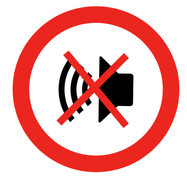
Dein Fuß bewegt sich trotzdem weiter.
Du zählst weiter.
Nur das Klatschen setzt aus, weil während einer Pause keine Note erklingen soll.
Lernziele
Nach diesem Kapitel kannst du:
- Ganze, halbe und Viertelpausen erkennen.
- Die Dauer jeder Pause erklären.
- Pausen sicher lesen.
- Rhythmen mit Noten und Pausen korrekt ausführen.
- Vollständige 4/4-Takte mit Noten und Pausen schreiben.
Lektion 01 / Ganze Pause
Vier Schläge Stille.
1. Erklärung
Eine ganze Pause dauert vier Schläge. Während dieser Zeit wird nicht geklatscht.
2. Körperübung
Dein Fuß tritt auf jeden Schlag. Zähle:
1 – 2 – 3 – 4
Wir klatschen nicht, aber halten dafür die ganze Pause und spüren diese.
3. Leseübung
Rhythmen lesen. Zählen. Nur die Noten klatschen. Fühle die Pausen, indem du sie hältst.
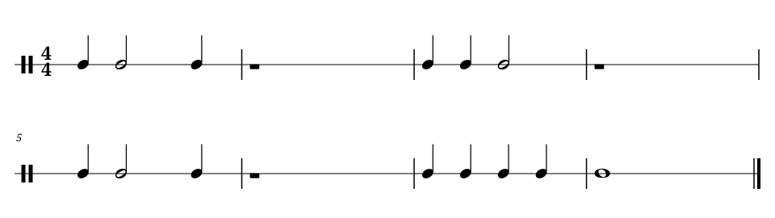
4. Höraufgaben
Es wird ein Takt durch das Metronom eingezählt. Dann beginnt die Höraufgabe. Notiere die Noten und Pausen, die du hörst, und kontrolliere dein Ergebnis mit dem Lösungsblatt.
Höraufgabe 1
Lösung 1 anzeigen
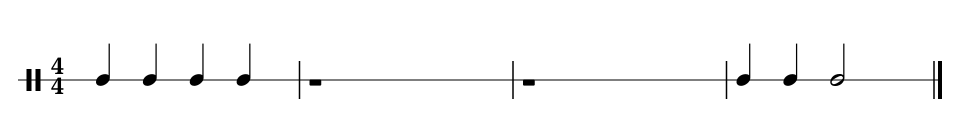
Höraufgabe 2
Lösung 2 anzeigen

Höraufgabe 3
Lösung 3 anzeigen

Höraufgabe 4
Lösung 4 anzeigen

Glückwunsch! Du kannst eine ganze Pause über vier Schläge halten.
Lektion 02 / Halbe Pause
Zwei Schläge Stille.
1. Erklärung
Eine halbe Pause dauert zwei Schläge.
2. Körperübung
Stampfe mit dem Fuß wie in den vorigen Kapiteln. Halte nun jeweils zwei Schläge lang eine aktive Pause. Das bedeutet, du konzentrierst dich darauf, jeweils zwei Schläge Stille zu spüren.
Spüre auch, wo die halbe Pause jeweils beginnt: in diesem Fall auf Schlag 1 und auf Schlag 3.
Stampfe: 1, 2, 3, 4. Klatsche nicht. Spüre:
1 2 | 3 4
3. Mitspielübung
Stampfe 1 2 3 4
Zähle 1 2 3 4
Spiele abwechselnd eine halbe Note und eine halbe Pause.
Es gilt, die Pause genauso deutlich wahrzunehmen wie die Note.
4. Leseübung
Rhythmen lesen und klatschen.

5. Höraufgaben
- 1 Takt Einzähler
- 4 Takte Noten
- Stampfe die Zählzeiten 1234
- Notiere die Länge der gespielten Noten und Pausen
- Vergleiche mit der Lösung
Höraufgabe 1
Lösung 1 anzeigen

Höraufgabe 2
Lösung 2 anzeigen

Höraufgabe 3
Lösung 3 anzeigen

Glückwunsch! Du kannst eine halbe Pause erkennen und zwei Schläge lang halten.
Lektion 03 / Viertelpause
Ein Schlag Stille.
1. Erklärung
Eine Viertelpause dauert einen Schlag. Der Puls läuft weiter.
2. Mitspielübung
- Radio starten
- 1234 stampfen
- 1 und 3 klatschen
- 2 und 4 als Pause spüren
3. Leseübung
Rhythmen lesen. Klatschen.

Leseübung 2 · Versteckter Songrhythmus · LDDLM

4. Höraufgaben
Notiere, was du hörst. Verdecke die Lösung, bis du sie brauchst.
Höraufgabe 1
Lösung 1 anzeigen

Höraufgabe 2
Lösung 2 anzeigen

Höraufgabe 3
Lösung 3 anzeigen

Glückwunsch! Du kannst eine Viertelpause lesen, hören und im Puls ausführen.
Lektion 04
Gemischte Pausenwerte
Jetzt kombinierst du ganze, halbe und Viertelpausen mit den Notenwerten aus Kapitel 2. Zähle in jeder Pause weiter und markiere alle vier Schläge mit dem Fuß.
Pausenlängen zuordnen
Aufgabe 1 von 3
Wie viele halbe Pausen dauern so lang wie eine ganze Pause?
Wie viele Viertelpausen dauern so lang wie eine halbe Pause?
Wie viele Viertelpausen dauern so lang wie eine ganze Pause?
Leseübung · Vier Takte klatschen
Zähle gleichmäßig „1, 2, 3, 4“ und klatsche die Notenanfänge. Prüfe deinen Rhythmus mit dem Rhythminator.
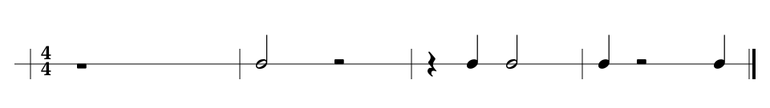
Takte vervollständigen
Ergänze die Lücken mit Noten oder Pausen. Jeder Takt muss auf vier Schläge kommen. Für manche Lücken gibt es mehrere Lösungen.
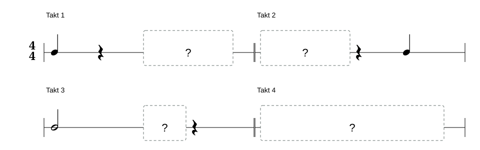
Finde den Fehler im Takt
Vergleiche die Vorlage mit dem, was du im Rhythm Radio hörst. Schreibe den gehörten Takt auf und prüfe ihn mit der Lösung.
Hörvergleich
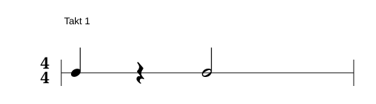
Lösung anzeigen
Auf Schlag 2 hörst du eine Viertelnote. Die halbe Pause beginnt auf Schlag 3 und dauert bis zum Ende des Takts.
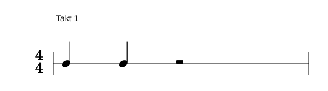
Eigene Takte schreiben und spielen
- Schreibe deine eigenen Takte
- Nutze eine halbe Pause und eine Viertelpause
- Spiele deine Takte im Rhythminator

Glückwunsch! Du kannst Rhythmen mit verschiedenen Pausen lesen, klatschen und schreiben.
Zum Abschluss
Kapitelziel erreicht.
Glückwunsch!
Du hast Rhythmus 1 abgeschlossen.
Damit beherrschst du alle grundlegenden Rhythmussymbole des 4/4-Takts und bist bereit für komplexere Rhythmen.
Buch der Fähigkeiten
Hier stehen deine Fähigkeiten, sobald du im Kurs Ziele abhakst.